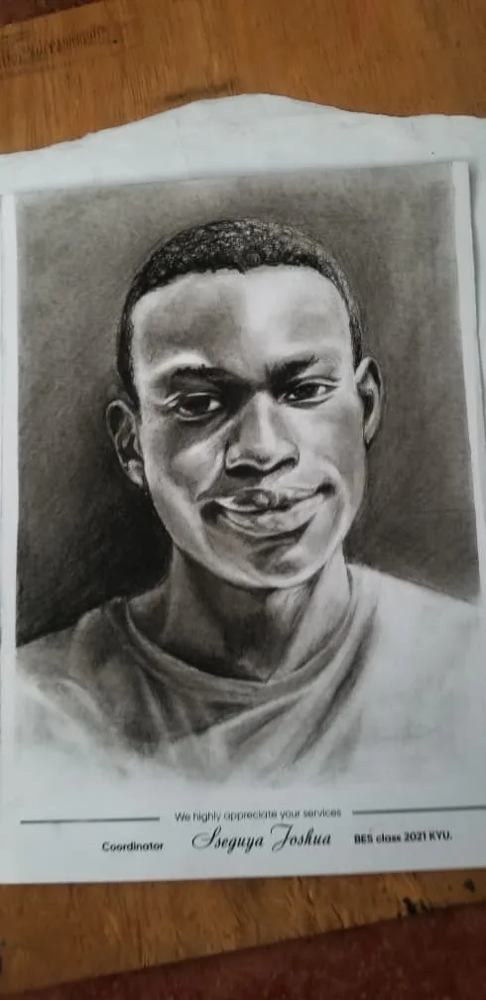
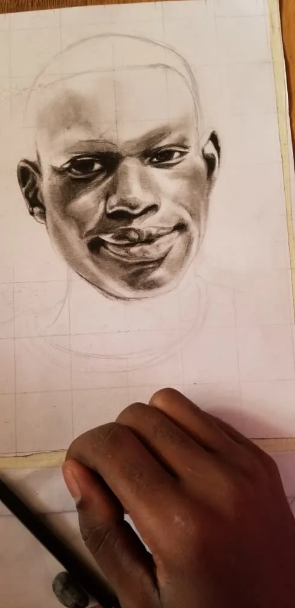
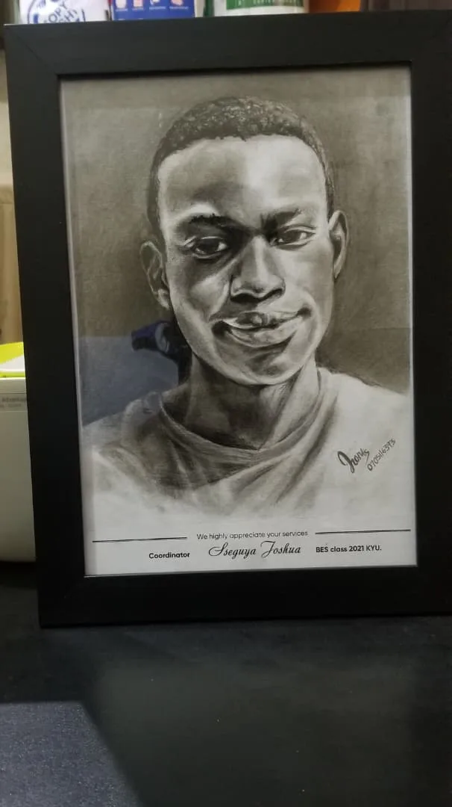

Face
value.
Come in. Pick a face. Stay for the expression. I’m Ian, and this is where my conversations turn into drawings.
Enter the sketch wall ↘

Off the page
I’ll happily start a conversation with somebody I just met. I like the moment a joke lands and a face changes before either of us says another word. That flicker is the sort of thing I want to draw.
I work things out with a pencil. A crooked first line can lead somewhere interesting, and I’m usually curious enough to follow it. Portraits give that playful energy a focus.
Sketch wall
Open a study to read what I look for in a drawing. These photographs show a portrait at different levels of detail.

Contour +
I follow the outer edge before adding detail. A single change of angle can give a profile its character.

Expression +
I look for the small lift of a brow or the tilt of a mouth. That’s often where the energy sits.

Light & shadow +
I squint at the big shapes first. Light across a cheek can describe the face with very few lines.
Next on paper
I want to loosen up my lines, catch more expressions, and make room for other people’s ideas. A commission or a collaboration would give me a new face, a fresh question, and a reason to experiment.
Inside the portrait
In the close-up, a hand rests near the unfinished drawing. Look at the space between the eye sockets and the forehead. Even before the rest of the page is filled, those shadows give the face volume.
Portfolio study from the supplied photographs. The sitter, medium and project date have not been documented.
From a look to a line
Observe · the expression
I look for the detail that makes a face feel particular. A tilt of the head can say more than a carefully drawn outline.
Draw · place the shadows
I want a few strong marks to carry the expression. Looking between the photograph and the drawing helps me decide where to soften an edge.
Next · try another approach
My aim is to let more movement into my lines while keeping the sitter recognisable.
What caught your eye?
Look again at the sketch wall. Which mark first made the face feel alive to you? This space is reserved for reader observations and sketches shared with permission.
Studio social feed · awaiting a connected account.